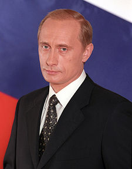
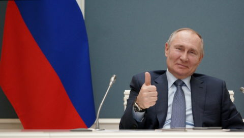

...és még sok más
politikus cselgáncsozó kaszkadőr edző katona jogász ügynök (titkosszolgálattal együttműködő személy)
1999. augusztus 9-én Borisz Jelcin hivatalban lévő elnök – a következő évben esedékes elnökválasztást megemlítve – televíziós nyilatkozatban jelentette be: „Most elhatároztam, hogy megnevezem azt a személyt, aki véleményem szerint képes konszolidálni a társadalmat… ”, és Vlagyimir Putyint nevezte meg.[14] Ugyanekkor menesztette Szergej Sztyepasin kormányát és megbízta Putyint a kormányfői teendők ellátásával. Putyint először a Csecsenföld ellen indított akciók tették ismertté és népszerűvé a lakosság körében, miután 1999 szeptemberében több, két moszkvai és egy volgodonszki lakótelepi robbanás is történt, több száz halottal és sérülttel. A hatóságok szerint a robbantásokért a csecsen szeparatisták feleltek, bár konkrét felelősöket nem találtak. Putyin, akinek addig alig volt támogatottsága friss miniszterelnökként kemény megtorlást ígért. A dagesztáni háború miatt adott volt a csecsen fenyegetés, ezért indított offenzívát Oroszország az év decemberében, mely a tíz évig tartó második csecsen háborúhoz vezetett. A katonai reakció rövid úton meghozta Putyin népszerűségét is, miközben Putyin körül Egység néven új párt is alakult. Számos körülmény viszont felvetette az FSZB és ezáltal közvetve Putyin érintettségét is, ezen kívül semmilyen konkrét bizonyíték nem volt arra, hogy a robbantásokhoz csecseneknek bármi közük lenne. Az is felmerült, hogy az oroszok csalogatták Dagesztánba a csecseneket, hogy legyen alap a háborúskodásra, ezzel legitimálva Putyin hatalomba kerülését. Az ügy pontos kivizsgálását ellehetetlenítették, az utána nyomozó személyek ellen pedig bírósági eljárások indultak, vagy merényletek áldozatai lettek, mint Anna Politkovszkaja vagy Alekszandr Litvinyenko. Putyin kategorikusan tagadta, hogy bármi köze lenne a merényletekhez.[15][16] A 2002-ben szintén Moszkvában történt színházi túszejtést is hivatalosan csecsenek követték el, a túszszabadítás közben használt altatógáz miatt azonban 130-an életüket vesztették, köztük mindegyik túszejtő. A körülmények itt sem lettek tisztázva
1999. augusztus 16-án az Állami Duma jóváhagyta kormányfői kinevezését. 1999. december 31-én, amikor Borisz Jelcin váratlanul lemondott, Putyin Oroszország megbízott elnöke lett. 2000. március 26-án a szavazatok 52,94 százalékával[18] megválasztották Oroszország elnökének, május 7-én iktatták be hivatalába. Ő ekkor Mihail Kaszjanovot nevezte ki kormányfőnek. 2004. február 24-én, kevéssel az elnökválasztás előtt menesztette Kaszjanov kormányát, új kormányfőnek pedig Mihail Fradkovot nevezte ki. 
2022 januárjára súlyos katonai krízis állt elő, mikor az orosz haderő látványos mozgósításba kezdett az ukrán határ mentén. Putyin számos figyelmeztetést kapott nyugati országok vezetőitől, amiben óvva intették bármilyen Ukrajnát érintő offenzívától, ami mind Oroszországra, mind magára Putyinra nézve súlyos reakciókat vonna maga után. Oroszország garanciát kért Ukrajna NATO-tagságának végleges elhalasztására és a szervezet katonai infrastruktúrájának környékbeli visszafejlesztésére, amiket a NATO és szövetségesei mind visszautasítottak és figyelmeztettek egy esetleges támadás következményeire.[52][53][54][55] Putyin egyértelműen a NATO keleti terjeszkedését igyekezett meggátolni, de ezt inkább Ukrajna gazdasági krízisével kívánta elérni, melyhez a mozgósítás egy lehetséges háború lehetőségével éppen elég volt.[56] Más érvek szerint Putyin ukrán háborúja inkább csak egy blöff, aminek lebegtetésével próbálja destabilizálni a különféle véleményen lévő NATO-t és szövetségeseit, miközben más módokon, például kiberbűnözés révén is borsot törhet a nyugat orra alá.[57] Később tovább mélyült a válság, mikor Putyin elismerte Donyecket és Luhanszkot, mint szuverén államokat, ezen kívül élesen kritizálta Ukrajnát, kétségbe vonva az ország puszta létét is, majd Ukrajnát vádolta agresszióval és hogy üldözné az orosz kissebbségeket.[58][59][60] Feltételeket is megfogalmazott Ukrajna felé, amivel „csökkenhetne a feszültség”, ezek a Krím elismerése, mint Oroszország része, Ukrajna NATO-csatlakozási szándékának elvetése és az Ukrajnába küldött fegyverszállítmányok felfüggesztése.[61] Volodimir Zelenszkij ukrán elnök visszautasította Putyin állításait és követeléseit.[62] Putyin a parlamenttől is engedélyt kapott az orosz haderő külföldön való bevetésére.[63] Joe Biden amerikai elnök és az Európai Unió is szankciókat jelentett be Putyinnal és Oroszországgal szemben
